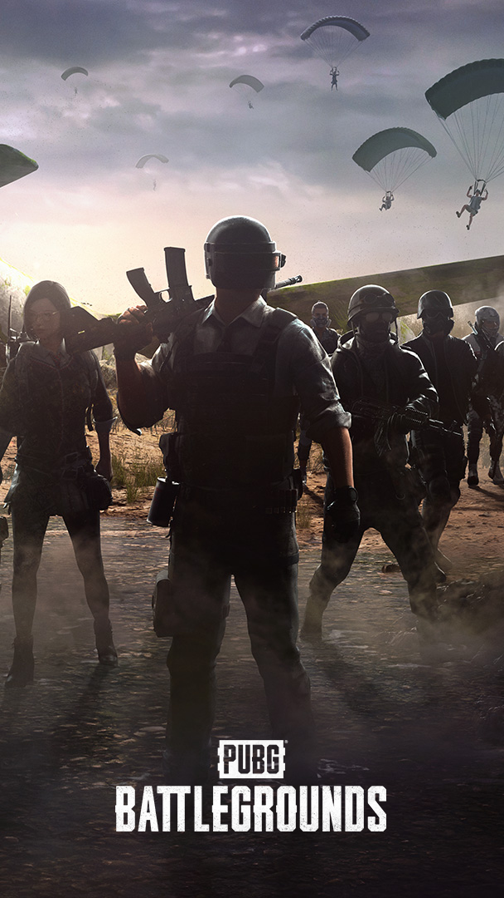

크래프톤의 자회사인 펍지 스튜디오의 MMO 슈팅 게임이다. 공식 명칭은 PUBG: BATTLEGROUNDS, 약칭 배틀그라운드이며, 더 줄여서 배그라고 많이 부른다.
게임플레이 형식은 브렌던 그린(Brendan Greene, 닉네임 PLAYERUNKNOWN)이 이전에 제작했던 ARMA 3의 모드 'PLAYERUNKNOWN'S Battle Royale'에 기반하여, 일개 게임의 모드에 그치지 않고 스탠드얼론으로 제작된 작품이다.
최대 100명의 인원이 무기와 탈것을 활용해 벌이는 배틀로얄 게임으로, 방대한 오픈 월드 맵에서 물품을 얻고 다양한 전략을 이용해 싸우면서 최후의 1인 혹은 1팀을 가려내는 방식이라고 할 수 있다.
스팀을 통해 전세계 동시 출시를 하였으며, 300만명이 넘는 스팀역사상 최다 동접자기록을 세우면서 본격적인 배틀로얄 게임 시대를 열었다는 평가를 받고 있다.